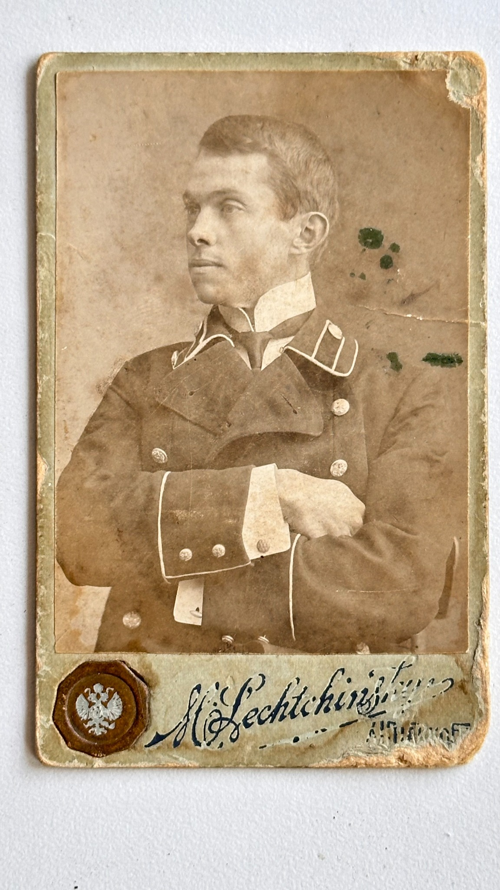

Неопознанные фотографии семейного архива
В семейном архиве сохранились дореволюционные портреты, личности изображённых на которых пока установить не удалось.


Особенно важны два портрета молодых людей в форменной одежде. На одном из снимков сохранилась подпись фотографического ателье «Лехчинский». Эта деталь может указывать на польскую или польскоязычную среду фотографа и перекликается с семейной версией о возможном польском следе Каменских.
По оформлению фотографий, паспарту и одежде снимки можно предварительно отнести к концу XIX — началу XX века, ориентировочно к 1890–1910-м годам. Но имена людей, место съёмки и их связь с известными ветвями семьи пока остаются неизвестными.
Эти фотографии не доказывают польское происхождение семьи. Но они остаются важными семейными артефактами и возможной зацепкой для дальнейшего поиска.
Если кто-то из родственников, краеведов или исследователей сможет помочь установить личности изображённых людей, место съёмки, форму одежды, фотографическое ателье или другие детали, наша семья будет искренне благодарна за любую информацию.